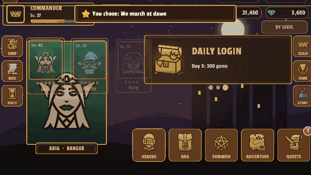
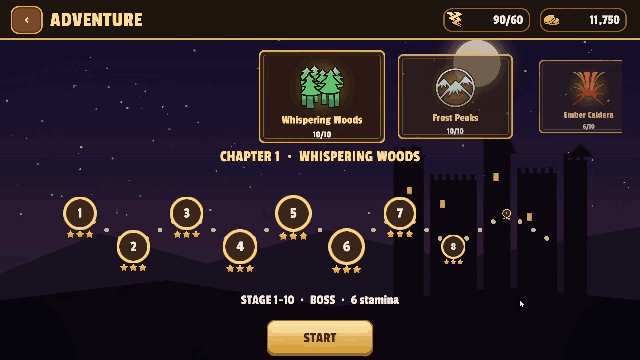
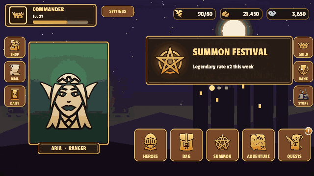
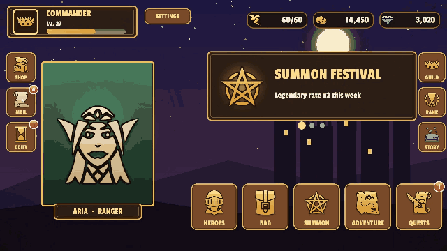

샘플
KeyTween에는 샘플 두 개가 들어 있습니다. Package Manager에서 KeyTween을 선택하고 Samples 탭에서 Import합니다.
들어 있는 샘플
| 샘플 | 내용 | 필요 |
|---|---|---|
| RPG Sample | 모바일 RPG UI 한 벌 | Input System |
| UI Components | 버튼, 글자 효과, 스크롤 리스트 예시 | Input System |
RPG Sample
- 모바일 RPG UI 한 벌입니다.
- 화면: 타이틀, 로비, 영웅과 강화, 가방, 소환, 모험, 전투, 퀘스트, 상점, 우편, 길드 채팅, 랭킹, 스토리, 설정
- 모든 움직임은 Prefab의 상태입니다. 스크립트는 화면을 열고 데이터를 채우기만 합니다.
- 씬:
Scenes/RPG.unity
아래는 RPG 샘플의 실제 화면입니다.
| 영웅 목록 → 상세(공유 요소 전환) → 강화 | 모험 → 편성 → 전투 → 승리 |
|---|---|
 |
 |
| 랭킹: 긴 목록 스크롤 | 우편 받기와 출석 보상 |
 |
 |
UI Components
예시가 씬마다 하나씩 들어 있습니다.
- 버튼
- 호버
- 토글
- 팝업
- 글자 효과
- 스크롤 리스트 예시 18가지
TextMeshPro 리소스
프로젝트에 TMP Essential Resources(TextMeshPro의 설정과 셰이더)가 없으면 샘플을 Import할 때 자동으로 함께 가져옵니다.
UniTask와 R3 예제는 Integrations에 있습니다.